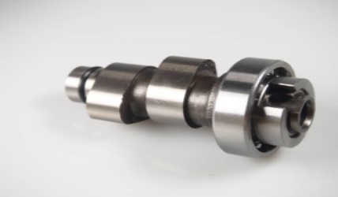
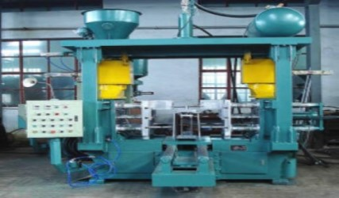
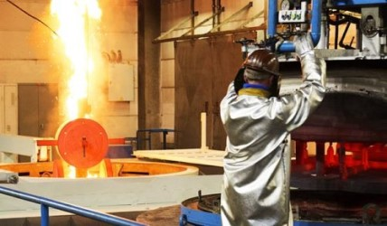

camshaft angle monitoring system

CamShaft Angle Monitoring System to Measure the angle of cam shaft with 0.5mm precision level, with reference to
the given graph form computer, we can measure the Camshaft profile, check whether the casting dimension within the
specification and to Control the product quality.
coreshooter

Core shooter Process Control and Monitor is a product used in foundry for the process of core production; the
machine has been controlled by our product, previously the machine has been manually operated by the operator, we
have to take a note of the Product count, Rejection count, Temperature, Idle time, On/Off time. We have also made
the operating inputs for the machine automatically through internet.
heat-treatment

Heatreatment is a product used in foundry for the process of casting Heatreatment; the machine has been controlled
by our product, previously the machine has been manually operated by the operators, which the user has to set the
temperature for every process so that the machine can operate.
machineshop
Machines Shop helps the field engineers and supervisors in your factory to perform Quality Checks on all machinery
parts/products/processes digitally and in real time eradicating the need of papers and help with a stringent
process control.
machine monitoring system
MMS Provides the interaction of the machine with the software the details obtained from the machine is given to
the software, where the data are categorized into their respective details along with the report generation for
the machines and it can be accessed by the PC’s.
temparature monitoring
Wireless temperature monitoring system (WTMS), for shell moulding machine is used to set and monitor the
temperature remotely through internet.